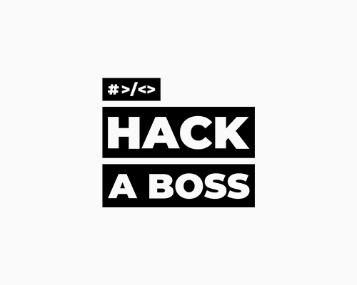

🎓 Ingeniería de Telecomunicación
2016 – 2020Estudié Ingeniería de Telecomunicación, donde adquirí una sólida base en lógica, hardware y sistemas.
Estudié Ingeniería de Telecomunicación, donde adquirí una sólida base en lógica, hardware y sistemas.

Esta etapa creativa me enseñó a comunicar visualmente, contar historias y generar experiencias memorables en digital.

Formación intensiva en desarrollo web fullstack. Aquí comenzó oficialmente mi carrera como desarrollador.

Desarrollé interfaces escalables y herramientas internas con React y Python. También colaboré en UX, contenido editorial y branding para uno de los sitios más visitados del mundo.

Creé un editor de imágenes inteligente con Angular y LitElement, integrando máscaras, filtros y generación por prompt.
Desarrollé interfaces en Angular que utilizan IA para evaluar y validar documentos legales.
Diseño APIs backend en Python para conectar con servicios de IA generativa. Me centro en la escalabilidad y optimización de prompts.